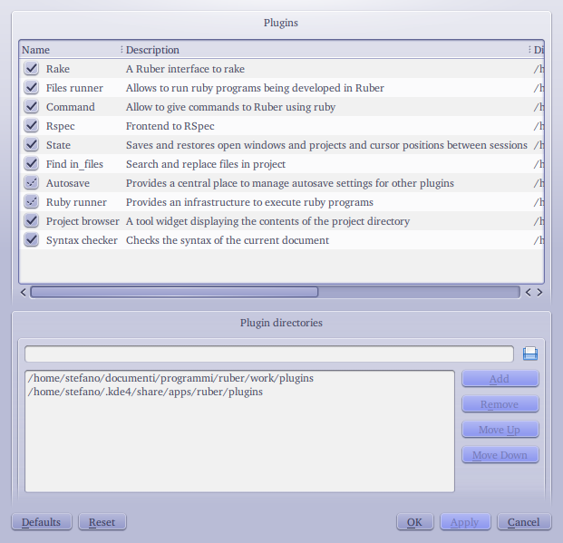

A Ruby IDE written in Ruby
By design, Ruber can be used to work on both stand-alone files (for example, a small ruby script) or projects containing multiple files.
The basic operations to work with a single file are those common to most editors:
use the File/New menu entry to create a new file or the File/Open menu entry
to open an existing file and File/Save or File/Save As menu entries to save it.
Like other editors, Ruber allows you to change settings for a single file. To do
so, use the Document/Configure Document menu entry. Using this functionality
you can, for example, tell Ruber to always use a particular ruby interpreter to
execute that file, without changing the default global interpreter. Note that this
only works for ruby settings. For settings used by the editor component, you’ll
need to use modelines. See the Kate documentation.
Note that some of the functionality provided by plugins only works for projects. This is because stand-alone files are meant to truly be stand-alone. For example, the rake plugin provides no functionality for single files, because usually a Rakefile is used together with other files.
From version 0.0.7, Ruber supports split views. This means that you can have
more than one view in a single tab. To split the current view in two, you use the
Window/Split Horizontally and Window/Split Vertically menu entries. This
will divide the view which currently has focus in two, with both halves displaying
the same document. If you want to have one of the views, you can use one of the
other entries of the Window menu:
Switch to New File will create a new, empty document and display it in the
current viewSwitch to Open File will display an open file dialog and display the file you
choose in the current viewSwitch to Document display one of the already open documents
in the current viewSwitch to Recent File display one of the recently open
files in the current viewWhen working with more than one view per tab, note that the File/Close menu entry
will close the current view, not the current tab. To close all the views in the
current tab at the same time, you can use the close button on the tab (unless
you disabled them) or the File/Close Current Tab entry.
In Ruber, a project consists of a directory (called project directory_)
containing a file with extension
.ruprj and possibly one or two oteher files, one with extension .ruusr and one
with extension .ruses. The first file is called project file, the second is
called user file and the third session file.
The project files contains settings which are intrinsic to the project (for example, the name of the project, which files belong to the project, or the patterns associating each file with its spec file).
The user file, instead, contains settings which are specific for a user (for example, the path of the ruby interpreter to use, which may vary on different systems, or the shortcuts to associate to rake tasks, which each developers chooses according to his own preferences).
The session file contains settings which are not only specific to a user, but also to the current status of the environment. For example, the list of open files in the project (used to restore them when Ruber is next started) is stored here. Usually, settings in this file are created automatically and don’t appear in the project configuration dialog.
Of these files, the project file is the only one which defines the identity of the project and the only one which is meant to be shared among developers working on the project; the other two files are optional and not meant to be shared. If your project is under version control, you usually want to version control only the project file (unless you’re working alone, in which case you may also want to version control the user file).
To open an existing project, use the Projects/Open Project menu entry, or
the Projects/Open Recent Project.
To create a new project, use the Projects/New Project menu entry. You’ll be
shown a dialog where you must enter the project name and choose a location where
to create it (the default location is controlled by a global setting). Pressing
the OK button will create a directory named as the project in the location you
chose and containing a project, user file and sessions file having the same name
as the directory.
After creating a new project, one of the first things to do is setup the list of files which Ruber should consider as belonging to the project.
To decide whether or not a file belongs to the project, Ruber uses include rules and exclude rules:
There are three kinds of rules:
./).File rules and regexp rules can be used to specify either include or exclude rules, while shell glob rules can only be used for include rules.
To create the list of files belonging to the project, use
the Project/Configure Project menu entry and go to the General page of the
dialog. It’s aspect will be similar to the following.
Write the shell glob rules in the Extensions line edit, separate by either spaces
or commas, or both (note that you can’t have spaces in the globs). This is usually
done so that files with certain extensions belong to the project without having
to add them explicitly.
To add a file or regexp include rule, use the corresponding buttons in the Files
to include box, while to add file and regexp exclude rules use the buttons in
the Files to exclude box. To remove a rule, select it and click on the Remove
rule button in the appropriate section. Note that you can only add a file rule
for an existing file.
In the project configuration dialog, you can also set various project-wide options
provided by the plugins you have loaded. You can’t change the project name, however
(if you really want to, you can do so opening the project file in any editor (after
making sure the project is not open in Ruber), and look for an entry called project_name under a general entry.
The value after the colon is the name of the project. Change it and close the file.
Currently, in Ruber you can only have one open project at a time. Opening a project (or creating a new one) will close the current project (if any).
Ruber’s UI comprises:
When a tool widget has focus, you can use the View/Activate Editor menu entry
to switch back to the editor (without closing the tool widget). The three entries
in the View/Tool Widgets submenu, instead will each close the corresponding tool
widget if visible, and display it if hidden. In the former case, the focus will
be given back to the editor.
All the tool widget displaying the output from external programs share some functionality. In particular:
file_name:line_number, then the cursor will be moved
to that lineSome tool widgets also provide a filtering functionality. To use it, choose the “Create Filter” entry from the context menu, enter the desired regular expression in the line edit which becomes visible and (with focus in the line edit) press Enter. Now only the lines matching the regexp you entered will be visible. You can remove the filter using the Clear Filter context menu entry. If you want to remove the filter but be able to apply it without writing it again, check the Ignore Filter entry. Uncheking it will make the filter active again.
When you have a project open, you can quickly open a file belonging to the project
by using the Quick Open File menu entry in the Project menu. It’l display a dialog
with a list of all files in the project and a line edit above it. In the line edit,
you can enter a regular exrpession to restrict the list of files. If the regexp
contains the path separator (/), the regexp will match both the file name and
the directory name (relative to the project directory). If the regexp doesn’t
contain a path separator, only the file name will be matched.
For example, suppose the list of files is:
lib/plugins.rb
plugins/x.rb
plugins/y.rbIf the regexp is plug, then the list will only contain plugins.rb. If the regexp
is plugins/, then all three files will be listed.
Pressing the up and down keys on your keyboard will navigate the list of files even if the focus is in the line edit.
You can choose the plugins using the Settings/Choose Plugins menu entry. It’ll
display a dialog like the one in the following picture

The list at the top of the widget contains all the plugins availlable on your system, together with a description (second column) and their plugin directory (third column).
Checked plugins are the ones you have enabled (or which are enabled in the default Ruber configuration, if you didn’t change it).
Plugins which are partially checked (like Ruby runner and Autosave in the picture) are plugins which you didn’t choose, but are needed because some of the plugins you’ve enabled need them. You can click again on them to choose them, but can’t disable them.
The lower part of the dialog contains a list of directories which are searched
for plugins. By default, the plugins subdirectory Ruber installation directory
and a directory in your KDE configuration directory. You can add other directories
by inserting it in the URL widget above the list, then pressing the Add button.
To remove a directory, select it, then press the Remove button. You can move the
selected directory up and down with the corresponding buttons. Plugins in directories
higher in the list have priority over those in directories below them.
If changing the plugin directories causes problems, such as some selected plugins being missing, or some dependencies among plugins being unsatisfied, you’ll be warned with a message box.
To configure the editor, use the Settings/Configure Editor menu entry. The dialog
is the same as the Editor component page in the Kate Settings dialog.
To change options related to Ruber, use the Settings/Configure Ruber menu entry.
The Ruber core provides two pages in this dialog, General and Colors (the other pages you may see are associated with plugins and will be described in each plugin’s section).
In the General page, you can configure:
In the Colors page, you can configure the colors commonly used by various tool widgets, in particular those displaying output from external programs.
Each line of text in these tool widget is of one of four categories:
-w flag)Beside each of the Output, Error and Warning label there are three color selectors, labeled “Default”, “Variant 1” and “Variant 2”. Variants can be used by plugins to display text belonging to the same category but with somewhat different meaning in different colors (for example, a plugin which runs two programs in sequence can use the default color to display the output of the first one and the “variant 1” color for the output of the second).
Also beside the Message label there are color selectors, labeled with “Default”, “Good” and “Bad”. The meaning is similar to those of the variants: the color associated with “Good” is used to display messages which the user will consider good (for example, the success of a given operation). Conversely, the color associated with “Bad” is used to inform of bad news (for example, that something has failed), while the “Default” color is used for messages which are neither good nor bad.
{kind=link}
{kind=link}